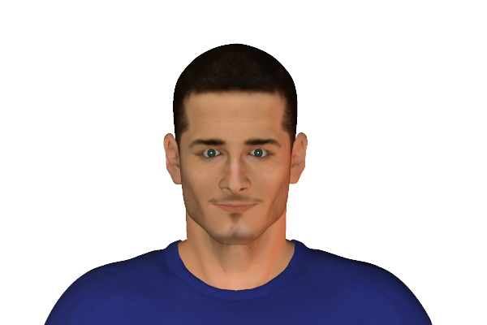
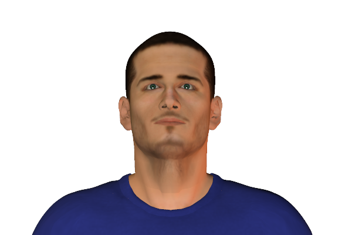

Bookmark added
-
head tilted to one side
 non-threatening, submissive, thoughtfulnessWhen the head tilts while thinking it can indicate that thinker has a different perspective. It also signals interest or vulnerability or a sign of trust.
non-threatening, submissive, thoughtfulnessWhen the head tilts while thinking it can indicate that thinker has a different perspective. It also signals interest or vulnerability or a sign of trust. -
head forward, upright
 interest, positive reactionLeaning towards the front indicates interest. Generally the forward leaning of the upper body commonly while sitting.
interest, positive reactionLeaning towards the front indicates interest. Generally the forward leaning of the upper body commonly while sitting. -
active listeningattention, interest, attractionAttentively listening indicates the person is interested. It can also signal attraction or being alert to what is being said, the head may also tilt. The eyes generally remain focussed on the speaker.
-
direct eye contact (when listening)
 attentiveness, interest, attractionEyes which are focussed on the speakers eyes indicate full attention and interest. It can also be a sign of attraction.
attentiveness, interest, attractionEyes which are focussed on the speakers eyes indicate full attention and interest. It can also be a sign of attraction. -
widening eyes
 interest, appeal, invitationWidening eyes towards anything indicates interest and mostly invites positive response. Widened eyes with raised eyebrows can be due to shock as well. Mostly widening eyes is a welcoming expression.
interest, appeal, invitationWidening eyes towards anything indicates interest and mostly invites positive response. Widened eyes with raised eyebrows can be due to shock as well. Mostly widening eyes is a welcoming expression. -
pupils dilated (enlarged)
 attraction, desireThe enlarged pupils of the eye indicates seeing something attractive.
attraction, desireThe enlarged pupils of the eye indicates seeing something attractive. -
winking
 friendly acknowledgement, complicity (e.g., sharing a secret or joke)It is generally associated with male flirting. It can also indicate a joke shared between two people.
friendly acknowledgement, complicity (e.g., sharing a secret or joke)It is generally associated with male flirting. It can also indicate a joke shared between two people. -
blinking frequently
 excitement, pressureBlinking frequently is a sign of excitement or pressure.
excitement, pressureBlinking frequently is a sign of excitement or pressure. -
running hands through hair
 flirting, or vexation, exasperationThis sign is commonly associated with flirting. But can also be done when a person is exasperated or frustrated.
flirting, or vexation, exasperationThis sign is commonly associated with flirting. But can also be done when a person is exasperated or frustrated. -
head held upneutrality, alertnessHigh head position indicates attention while listening with an open mind and has no bias.
-
blinking infrequently
 variousIt is not the most revealing sign of understanding body language.It can be due to boredom if the eyes are unfocussed or can also be concentration if eyes are focussed. It can also indicate negativity.
variousIt is not the most revealing sign of understanding body language.It can be due to boredom if the eyes are unfocussed or can also be concentration if eyes are focussed. It can also indicate negativity.